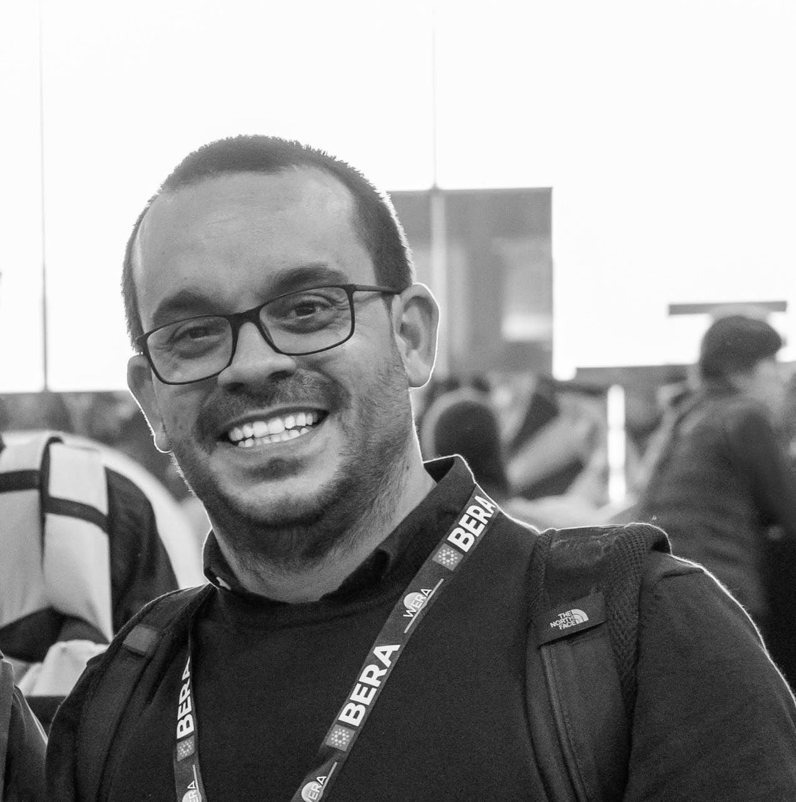

index_v2.qmd with the trestles template.
The original index.qmd is unchanged.

I am a Ramón y Cajal Researcher at the Department of Sociology of the Autonomous University of Barcelona and a member of the research group Globalisation, Education and Social Policies (GEPS).
Education privatisation and markets, educational policies and inequalities. My research lines include the political economy of education reforms, the enactment of education policies, and their impact on equity.
adrian.zancajo [at] uab [dot] cat